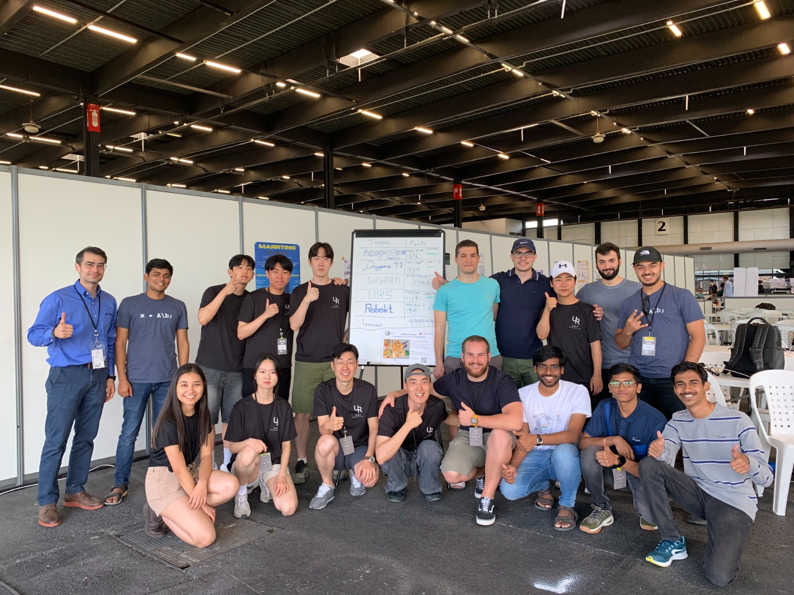
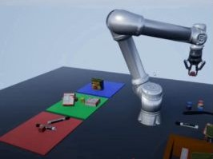
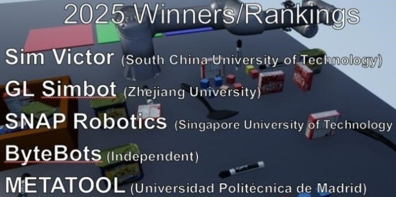

RoboCup ARM Challenge 2023 - Bordeaux, France
Dragons 77
Challenge
Complete a four-level autonomous manipulation task where increasing difficulty required vision-guided classification of objects by color and shape, followed by accurate placement into corresponding bins.


.png)
Technologies
- Engineered multi-stage perception pipeline using YOLOv4 detection.
- Applied RANSAC-ICP registration with voxel downsampling and statistical filtering.
- Estimated surface normals and curvature via least-squares neighborhood modeling.
- Selected antipodal grasp pairs aligned with gripper direction for stable manipulation.
- Built hierarchical state-machine planner integrating grasping, motion planning, and force control.
- Implemented recovery behaviors achieving 85% task success rate.
Outcome
🏆 5th Place Worldwide
🌏 3rd in Asia among 20+ International Teams
Improved pose estimation accuracy by 40% with 85% grasp success rate.
🌏 3rd in Asia among 20+ International Teams
Improved pose estimation accuracy by 40% with 85% grasp success rate.
RGMC, ICRA 2025 - Atlanta, USA
Team Bytebots
Challenge
Design and implement a fully autonomous robotic manipulation system capable of accurately detecting, localizing, and grasping YCB objects in a competitive environment.


Technologies
- Developed a YOLO-based object detection pipeline integrated with ICP pose refinement for accurate 6D pose estimation.
- Designed a collision-free motion planner using CHOMP with TOPP-RA for time-optimal trajectory parameterization.
- Implemented quintic polynomial trajectory interpolation to ensure smooth and stable robotic motion execution.
- Implemented the system in MATLAB & Simulink (Unity-based simulation)
Outcome
🏆 4th Place Worldwide
Developed a robust end-to-end perception-to-manipulation pipeline demonstrating high accuracy, smooth motion control, and efficient grasp execution.
Developed a robust end-to-end perception-to-manipulation pipeline demonstrating high accuracy, smooth motion control, and efficient grasp execution.